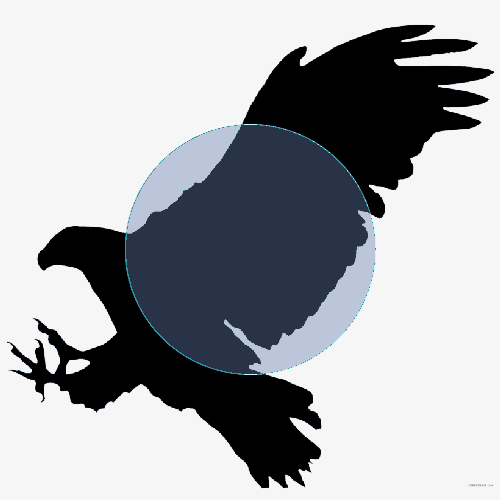

Just-in-time shader programming embedded in C++ using metaprogramming and operator overloading techniques.

Light-weight logging and error reporting system with a structured and configurable format. Integrates naturally into existing debuggers.
Parser combinator framework for C++ with seamless iteropation for user defined systems. Leverages metaprogramming and memoization for efficient parsing.
Research-oriented rendering engine written with C++ and Vulkan, with implementations for modern algorithms like ReSTIR.
Lightweight, single-header C++ wrapper for Vulkan to reduce boilerplate code and accelerate graphics application development.

Machine learning and numerical analysis library written in C++ for scientific computing. Includes a user friendly Python-like scripting language.
Simple YAML-based build system for C/C++ projects. Provides automatic dependency detection, and cross-platform compilation support.

Experiments on the limits of C++ metaprogramming. Benchmarks multiple implementations of a compile-time Lisp evaluator.
Wrapper library for ncurses that offers intuitive abstractions for common constructs such as text windows, prompts, and tables.

Exploratory project for efficiently deforming curves to match a target silhouette using differentiable rasterization.